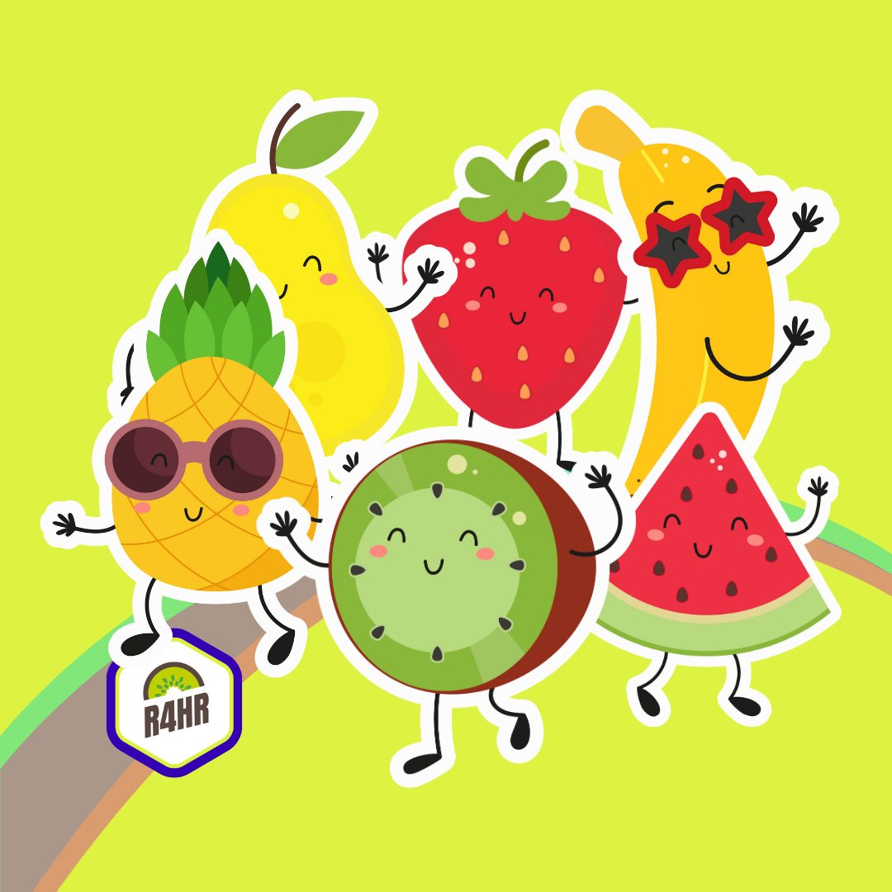

Introducción
R4HR es una comunidad de aprendizaje del lenguaje de programación R para las personas que trabajen o quieran trabajar en Recursos Humanos. Las personas que integramos esta comunidad provenimos de distintas partes del mundo, y contamos con distintas experiencias, personalidades, habilidades e historias. De toda esta diversidad se nutre nuestra comunidad.
También nos proponemos promover un uso ético y responsable de los datos de los trabajadores y de las trabajadoras para que la aplicación de People Analytics en las organizaciones se utilicen con fines que generen mejores resultados para la organización y para mejorar las condiciones y las experiencias de sus integrantes.
R4HR Club de R para RRHH es una comunidad auspiciada por R Consortium.

Principios y valores
Cada persona de la comunidad de R4HR deberá ser:
Abierta: Las personas de este espacio están abiertas a la colaboración, ya sea en proyectos, grupos, paquetes, problemas, y en cualquier tema relacionado con la difusión de R aplicado al mundo de Recursos Humanos. Somos receptivos a las críticas y comentarios constructivos, dado que las habilidades de las y los integrantes contribuyen a conseguir los propósitos de nuestra comunidad. Aceptamos a cualquier persona que desee participar de nuestras actividades promoviendo un ambiente en el que cualquiera pueda participar y sentirse parte.
Considerada: Las personas de la comunidad serán consideradas y considerados con sus pares, otros usuarios y usuarias de R. Somos conscientes de los esfuerzos de los demás, pacientes con las consultas y teniendo en cuenta que lo que hacemos en este entorno es por el bien de la comunidad. Somos atentas y atentos en nuestras comunicaciones, ya sea en vivo o personalmente.
Respetuosa: Las y los integrantes de la comunidad nos manejamos y comunicamos con respeto. Nos dirigiremos con respecto hacia los demás, sobre sus posiciones, habilidades y esfuerzos. Seremos respetuosas y respetuosos de los esfuerzos del trabajo voluntario que se lleva a cabo a lo largo de toda la comunidad de R en general. Somos respetuosos de los esfuerzos y procesos realizados por la comunidad y cuando trabajamos en ella. Si no estamos de acuerdo con algo, elevaremos cortésmente nuestras discrepancias.
En líneas generales, seremos buenas y buenos entre las personas de la comunidad. Contribuimos con la comunidad no porque estamos obligados, sino porque queremos. Si recordamos eso, estas pautas se seguirán naturalmente.
Consultas/preguntas/denuncias: Ante cualquier denuncia, pregunta o consulta relacionada con el cumplimiento o incumplimiento de las normas establecidas en el presente código o del espíritu buscado por el mismo, por favor enviar un mail a sergio@r4hr.club, que será recibido y analizado por el Comité de Conducta de la Comunidad R4HR.
Código de Conducta
R4HR es una comunidad en la que nos preocupamos por proporcionar un espacio libre de acoso para sus participantes.
Este código de conducta, en adelante “código”, tiene por objeto regular todos los espacios de participación de R4HR, incluyendo reuniones, Twitter, Slack, Meetup.com, listas de correo, plataformas, redes sociales y cualquier evento que tome lugar en el futuro. Proporciona orientación sobre lo que se espera de las personas que forman parte de este espacio. Cualquier persona que viole este código deberá ser sancionada o expulsada de estos espacios a discreción del Comité de Conducta.
Algunos espacios de R4HR pueden tener reglas de conducta adicionales, las cuales serán de libre acceso y estarán disponibles para los participantes.
¿Quiénes deben cumplir nuestro código?
Cada persona que forma parte de la comunidad ya sea como miembro, participante o voluntario de R4HR debe conocer, ser responsables y respetar las reglas de conducta establecidas.
Nuestro estándar
Tenemos la convicción de que damos lo mejor de nosotros cuando aprovechamos las habilidades, perspectivas y orígenes diversos para fomentar la innovación. Por eso, tenemos el compromiso de garantizar que la diversidad y la inclusión estén incorporadas en todo lo que hacemos.
Fomentamos un entorno que sea tanto inclusivo como diverso, a tratarnos con respeto, animar y escuchar a que las personas se expresen, creando una cultura en la que los integrantes se sientan valorados y comprendidos.
Priorizamos la seguridad de las personas marginadas sobre la comodidad de las personas privilegiadas.
Situaciones no Permitidas
Ningún código de conducta puede cubrir todas las situaciones posibles y es por eso que seguimos dependiendo de usar el buen juicio y alzar la voz cuando una situación se aleja del espíritu buscado por la comunidad.
Dejamos a disposición la siguiente línea exclusiva sergio@r4hr.club, para realizar cualquier comentario, sugerencia, advertencia o denuncia en caso de haber sido víctima o testigo de cualquier situación contraria a lo establecido en el presente código.
A continuación, se detallarán algunas situaciones o hechos que no están permitidos:
El acoso, intimidación, hostigamiento o amenazas no son aceptables en ninguna circunstancia.
Discriminación por motivos de género, raza, nacionalidad, religión, edad, discapacidad, identidad o reasignación de género, orientación sexual, neuro (a) tipicidad, apariencia física, tamaño corporal, afiliación política o membresía a un sindicato.
Hacer comentarios, distribuir o mostrar material obsceno o discriminatorio, incluidos mensajes escritos, grabados o transmitidos por medios electrónicos (como por ejemplo, correo electrónico, mensajes instantáneos o el contenido de Internet).
Los insultos, amenazas o burlas que se basan en la apariencia física.
Comentarios, gestos o contacto físico sin consentimiento o después de una solicitud de detención.
Comentarios no deseados sobre las opciones y prácticas de estilo de vida de una persona, incluyendo aquellos relacionados con alimentos, salud, crianza de los hijos, drogas y empleo.
Hacer bromas o comentarios denigrantes acerca de la orientación sexual o identidad de género de una persona, o de las percepciones sobre su orientación sexual o identidad de género.
Incitación a la violencia hacia cualquier persona
Interrupción sostenida del debate y/o discusiones.
Continuación de la comunicación uno-a-uno después de una solicitud de detención
Publicación de una comunicación privada.
Redes Sociales
Todas las personas que forman parte de la comunidad y publican en sus redes sociales, en nombre de la misma, deben seguir los mismos principios que se establecen en el presente código.
En particular, recuerde que cualquier acto de acoso, hostigamiento, discriminación o represalia que no sea admisible en formato presencial tampoco lo será en modo online.
Reportar
Si estás siendo acosado por un miembro/invitado/a/participante de R4HR, o notas que otra persona está siendo acosada, o tienes cualquier otra preocupación, por favor comunícate con sergio@r4hr.club o con algún integrante del Comité de Conducta. Las incidencias locales serán manejadas junto con las personas organizadoras locales. Si la persona que te está acosando está en el equipo, ella se recusará de manejar tu incidente.
Con el fin de proteger a los miembros contra el abuso y el agotamiento que este podría generar, nos reservamos el derecho de rechazar cualquier informe que creamos haber sido hecho de mala fe. Las denuncias realizadas con intención de silenciar demandas legítimas podrán ser eliminadas sin necesidad de respuesta.
Respetaremos las solicitudes de confidencialidad con el propósito de proteger a las víctimas de abuso. No las nombraremos sin su consentimiento.
A nuestra discreción, podemos nombrar públicamente a una persona sobre quien hemos recibido quejas de acoso, o advertir privadamente a terceros acerca de ellas, si creemos que hacerlo aumentará la seguridad de las personas del equipo o del público en general.
Nuestra política de no represalias
Si cree que usted o alguien que conoce ha sufrido represalias debido a que denunciaron violaciones del Código o participaron en una investigación, póngase en contacto con sergio@r4hr.club.
Consecuencias
En caso de recibir una denuncia, la misma será investigada y en caso de hacer lugar a la misma, se hablará con la persona involucrada a la espera de que detenga cualquier comportamiento de acoso de inmediato.
Si un o una participante se involucra en un comportamiento de acoso, el comité de conducta podrá tomar cualquier acción que considere apropiada, incluyendo la expulsión de todos los espacios de R4HR y la identificación de la persona como acosadora frente a las otras personas del equipo o al público en general.
Comité de Conducta
Las siguientes personas estarán a cargo de revisar los casos, consultas, y denuncias recibidas. Entre sus responsabilidades también estarán el de mantener y revisar este Código de Conducta y actualizarlo de ser necesario.
Se los puede contactar por correo electrónico a sergio@r4hr.club, o también por los siguientes canales:
Sergio Garcia Mora: sergio@d4hr.com
Yanel Paulette: yanelpaulette@gmail.com
Daniela García: claudiadanielagarcia@gmail.com